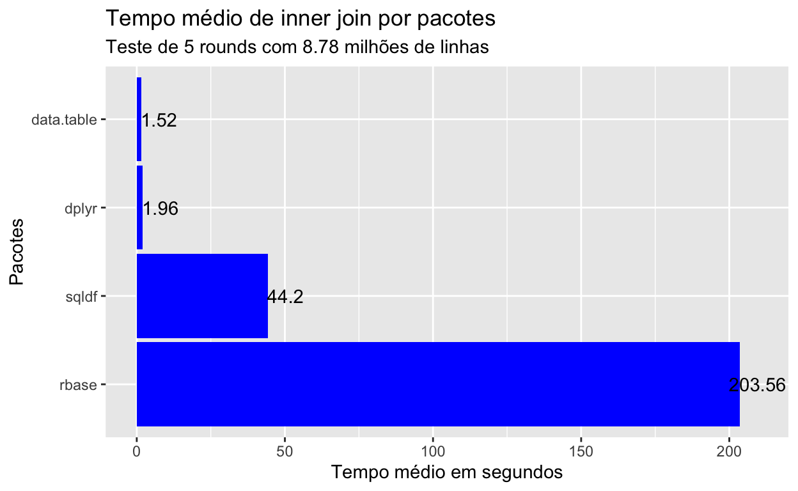

Nesse post vamos comparar diferentes pacotes com diferentes sintaxes e performances para explorar uma das principais tarefas sempre presentes na manipulação de dados: cruzamento de dados ou joins
Um dos grandes benefícios do R é a diversidade de pacotes disponíveis. Pode até parecer redundância ter um monte de pacote para chegar no mesmo resultado, mas poder escolher entre diferentes pacotes com diferentes sintaxes e performances cria uma flexibilidade enorme para dar o tom que você quiser ao seu projeto. Nessa sequência de posts vamos tentar explorar esses diferentes pacotes que te permitem realizar as principais tarefas da manipulação de dados de diferentes formas.
Vamos começar explorando algumas abordagens para realizar o clássico JOIN. Iremos comparar a sintaxe e performance do join feito com o sqldf, dplyr, data.table e o próprio rbase.
Se tem dúvidas sobre o que exatamente a operação de join faz ou quiser saber mais sobre join, recomendo a leitura do nosso post Sobre Joins em R.
library(tidyverse)
library(tictoc)
library(sqldf)
library(data.table)
library(glue)Vamos exercitar diferentes pacotes para fazer joins com os dados de comércio exterior disponíveis no portal das estatísticas de comércio exterior. Baixamos os dados de toda a série histórica de importação nesse link. Esses dados apresentam todas as importações, de 1997 a 2019 detalhadado por produto, país e outras dimensões relevantes para comércio exterior.
Os produtos são sempre registrados em NCM - Nomenclatura Comum do Mercosul, que é um código de 8 dígitos especificando o tipo de produto importado.
O join que iremos realizar nada mais é do que o cruzamento da série histórica com uma tabela de referência com a descrição detalhada de cada código 8 dígitos ao longo da série, dessa forma saberemos o nome de cada produto.
Apos obter os dados, faremos a leitura da seguinte forma.
dados <- read_csv2('../../dados/IMP_COMPLETA.csv',
col_types = 'ccccccccnnn')
produtos <- read_csv2('../../dados/NCM.csv',
col_types = 'cccccccccccccc')
glimpse(dados)
Observations: 32,199,492
Variables: 11
$ CO_ANO <chr> "1997", "1997", "1997", "1997", "1997", "1997", …
$ CO_MES <chr> "12", "12", "12", "12", "12", "12", "12", "12", …
$ CO_NCM <chr> "02012090", "85366990", "74191000", "45049000", …
$ CO_UNID <chr> "10", "11", "10", "10", "10", "11", "10", "11", …
$ CO_PAIS <chr> "845", "386", "190", "244", "245", "249", "063",…
$ SG_UF_NCM <chr> "RS", "SP", "SP", "CE", "SC", "SP", "SP", "PR", …
$ CO_VIA <chr> "07", "04", "04", "04", "01", "01", "07", "01", …
$ CO_URF <chr> "1011000", "0817600", "0817600", "0717700", "092…
$ QT_ESTAT <dbl> 416342, 66673, 2131, 26, 10000, 13247, 44735, 24…
$ KG_LIQUIDO <dbl> 416342, 448, 2131, 26, 10000, 39599, 44735, 139,…
$ VL_FOB <dbl> 606408, 20528, 12212, 28, 2016, 145960, 184726, …
glimpse(produtos)
Observations: 13,069
Variables: 14
$ CO_NCM <chr> "44031100", "44031200", "44032100", "44032200…
$ CO_UNID <chr> "16", "16", "16", "16", "16", "16", "16", "16…
$ CO_SH6 <chr> "440311", "440312", "440321", "440322", "4403…
$ CO_PPE <chr> "1253", "1253", "1253", "1253", "1253", "1253…
$ CO_PPI <chr> "1990", "1990", "1990", "1990", "1990", "1990…
$ CO_FAT_AGREG <chr> "01", "01", "01", "01", "01", "01", "01", "01…
$ CO_CUCI_ITEM <chr> "2473", "2473", "2474", "2474", "2474", "2474…
$ CO_CGCE_N3 <chr> "230", "230", "230", "230", "230", "230", "23…
$ CO_SIIT <chr> "4000", "4000", "9000", "9000", "9000", "9000…
$ CO_ISIC4 <chr> "16", "16", "02", "02", "02", "02", "02", "02…
$ CO_EXP_SUBSET <chr> "0899", "0899", "0899", "0899", "0899", "0899…
$ NO_NCM_POR <chr> "Madeira em bruto, mesmo descascada, desalbur…
$ NO_NCM_ESP <chr> "Madera en bruto, incluso pelados, o simpleme…
$ NO_NCM_ING <chr> "Wood in the rough, even peeled, or roughly s…
dim(dados)
[1] 32199492 11Como podemos ver, o arquivo principal tem mais de 32 milhões de linhas. Vamos fazer os testes apenas com os dados de 2015 até 2019 e retirar algumas colunas desnecessárias para o cruzamento, mas caso queira reproduzir, recomendo deixar todas as linhas para que as diferenças fiquem mais evidentes. Deixaremos apenas o ano, código da NCM (código de produto) e valor do produto importado.
dados <- dados %>%
select(CO_ANO, CO_NCM, VL_FOB) %>%
filter(CO_ANO >= 2015)
glimpse(dados)
Observations: 8,782,363
Variables: 3
$ CO_ANO <chr> "2015", "2015", "2015", "2015", "2015", "2015", "201…
$ CO_NCM <chr> "84133090", "84212300", "39269090", "87082992", "292…
$ VL_FOB <dbl> 11908, 965236, 2, 134580, 111, 13152, 79396, 223, 13…
produtos <- produtos %>%
select(CO_NCM, NO_NCM_POR)Antes de começar os testes, vamos criar uma pequena função para avaliar o tempo médio entre as rodadas de join. Realizaremos mais de uma rodada para gerar um tempo médio de duração do processo de join. A função pega o log do tictoc contendo todas as execuções e subtrai o tempo final do tempo inicial, extraindo uma média simples entre as diferenças.
tempo_medio <- function(output.tictoc) {
mean(unlist(map(output.tictoc, function(x) x$toc - x$tic)))
}
for(i in 1:5) {
round <- glue('join dplyr rodada {i}')
tic(round)
dados.dplyr <- dados %>%
inner_join(produtos, by = 'CO_NCM')
toc(log = TRUE)
}
join dplyr rodada 1: 1.847 sec elapsed
join dplyr rodada 2: 2.522 sec elapsed
join dplyr rodada 3: 1.81 sec elapsed
join dplyr rodada 4: 1.805 sec elapsed
join dplyr rodada 5: 1.836 sec elapsed
(media.dplyr <- tempo_medio(tic.log(format = FALSE)))
[1] 1.964
tic.clearlog()
dim(dados.dplyr)
[1] 8782363 4
head(dados.dplyr)
# A tibble: 6 x 4
CO_ANO CO_NCM VL_FOB NO_NCM_POR
<chr> <chr> <dbl> <chr>
1 2015 84133090 11908 "Outras bombas para combust\xedveis, etc, pa…
2 2015 84212300 965236 "Aparelhos para filtrar \xf3leos minerais no…
3 2015 39269090 2 "Outras obras de pl\xe1sticos"
4 2015 87082992 134580 "Grades de radiadores para ve\xedculos autom…
5 2015 29269019 111 Outros sais de verapamil
6 2015 85109090 13152 "Partes de m\xe1quinas para cortar cabelo/to…
rm(dados.dplyr)O dplyr oferece uma sintaxe simples e concisa com o tidyverse, o join é feito com a função inner_join com nome bem explícito ao seu propósito, parâmetros também óbvios e entrega uma boa performance.
dados.datatable <- as.data.table(dados)
dados.produtos <- as.data.table(produtos)
for(i in 1:5) {
round <- glue('join data.table rodada {i}')
tic(round)
dados.datatable.final <- dados.datatable[dados.produtos, nomatch=0, on='CO_NCM']
toc(log = TRUE)
}
join data.table rodada 1: 1.436 sec elapsed
join data.table rodada 2: 1.696 sec elapsed
join data.table rodada 3: 1.442 sec elapsed
join data.table rodada 4: 1.442 sec elapsed
join data.table rodada 5: 1.576 sec elapsed
(media.data.table <- tempo_medio(tic.log(format = FALSE)))
[1] 1.5184
tic.clearlog()
dim(dados.datatable.final)
[1] 8782363 4
head(dados.datatable.final)
CO_ANO CO_NCM VL_FOB
1: 2017 44031200 317
2: 2017 44032600 4957
3: 2019 44032600 438
4: 2017 44061200 15000
5: 2017 44061200 90000
6: 2017 44061200 9503
NO_NCM_POR
1: Madeira em bruto, mesmo descascada, desalburnada ou esquadriada, tratada com tinta, creosoto ou outros agentes de conserva\xe7\xe3o, de n\xe3o con\xedferas
2: Outras madeiras em bruto, mesmo descascada, desalburnada ou esquadriada, de con\xedferas
3: Outras madeiras em bruto, mesmo descascada, desalburnada ou esquadriada, de con\xedferas
4: Dormentes de madeira para vias f\xe9rreas ou semelhantes, n\xe3o impregnados, de n\xe3o con\xedferas
5: Dormentes de madeira para vias f\xe9rreas ou semelhantes, n\xe3o impregnados, de n\xe3o con\xedferas
6: Dormentes de madeira para vias f\xe9rreas ou semelhantes, n\xe3o impregnados, de n\xe3o con\xedferas
rm(dados.datatable, dados.produtos, dados.datatable.final)O pacote data.table é famoso por entregar uma sintaxe um pouco menos intuitiva mas uma performance altíssima. Depois que você se acostuma com a sintaxe e ela deixa de ser uma barreira provavelmente você alcançará tempos de resposta impressionantes no R. Eu particularmente até hoje não me acostumei com a sintaxe e me dou por satisfeito com o equilíbrio do dplyr.
for(i in 1:5) {
round <- glue('join sqldf rodada {i}')
tic(round)
dados.sqldf <- sqldf('SELECT dados.*, produtos.*
FROM dados
INNER JOIN produtos
ON dados.CO_NCM = produtos.CO_NCM')
toc(log = TRUE)
}
join sqldf rodada 1: 44.98 sec elapsed
join sqldf rodada 2: 43.522 sec elapsed
join sqldf rodada 3: 44.21 sec elapsed
join sqldf rodada 4: 43.68 sec elapsed
join sqldf rodada 5: 44.619 sec elapsed
(media.sqldf <- tempo_medio(tic.log(format = FALSE)))
[1] 44.2022
tic.clearlog()
dim(dados.sqldf)
[1] 8782363 5
head(dados.sqldf)
CO_ANO CO_NCM VL_FOB CO_NCM..4
1 2015 84133090 11908 84133090
2 2015 84212300 965236 84212300
3 2015 39269090 2 39269090
4 2015 87082992 134580 87082992
5 2015 29269019 111 29269019
6 2015 85109090 13152 85109090
NO_NCM_POR
1 Outras bombas para combust\xedveis, etc, para motor a explos\xe3o/diesel
2 Aparelhos para filtrar \xf3leos minerais nos motores de igni\xe7\xe3o por centelha ou por compress\xe3o
3 Outras obras de pl\xe1sticos
4 Grades de radiadores para ve\xedculos autom\xf3veis
5 Outros sais de verapamil
6 Partes de m\xe1quinas para cortar cabelo/tosquiar, com motor el\xe9trico
rm(dados.sqldf)Já o sqldf é um pacote que, a meu ver, não é tão popular quanto os dois anteriores, mas ele entrega algo bem interessante: sintaxe perfeita de SQL. É como se os dataframes fossem tabelas e você pudesse usar SQL ANSI tal como uma consulta a banco. Excelente para quem é fluente e em SQL e quer fazer uma migração rápida para o R. O custo disso é a performance, que fica bem aquém dos dois pacotes mais famosos para manipulação.
Há uma pequena diferença de resultado pois o sqldf deixa as colunas de chave de join duplicada, ao contrário dos pacotes anteriores que já sintetizam a chave em apenas uma coluna, sem duplicação.
for(i in 1:5) {
round <- glue('join rbase rodada {i}')
tic(round)
dados.rbase <- merge(dados, produtos, by = 'CO_NCM')
toc(log = TRUE)
}
join rbase rodada 1: 372.836 sec elapsed
join rbase rodada 2: 168.665 sec elapsed
join rbase rodada 3: 153.381 sec elapsed
join rbase rodada 4: 159.296 sec elapsed
join rbase rodada 5: 163.635 sec elapsed
(media.rbase <- tempo_medio(tic.log(format = FALSE)))
[1] 203.5626
tic.clearlog()
dim(dados.rbase)
[1] 8782363 4
head(dados.rbase)
CO_NCM CO_ANO VL_FOB NO_NCM_POR
1 01012100 2016 19700 Cavalos reprodutores de ra\xe7a pura
2 01012100 2015 4395 Cavalos reprodutores de ra\xe7a pura
3 01012100 2019 571632 Cavalos reprodutores de ra\xe7a pura
4 01012100 2015 107500 Cavalos reprodutores de ra\xe7a pura
5 01012100 2016 15002 Cavalos reprodutores de ra\xe7a pura
6 01012100 2015 5000 Cavalos reprodutores de ra\xe7a pura
rm(dados.rbase)Temos como rbase uma sintaxe razoavelmente simples de join com a função merge, sem necessidade de carregar nenhum pacote, porém, temos uma performance desanimadora, inviabilizando o uso do join com rbase para manipulação de grandes volumes de dados.
Vamos a uma rápida comparação visual para entender os resultados.
resultado <- data.frame(pacote = c('dplyr','data.table','sqldf','rbase'),
tempo.medio = c(media.dplyr, media.data.table, media.sqldf,media.rbase),
stringsAsFactors = FALSE)
ggplot(data = resultado,
aes(x = reorder(pacote, -tempo.medio), y = tempo.medio)) +
geom_bar(stat = "identity", width = 0.95, fill = "blue") +
geom_text(data = resultado,
aes(y = tempo.medio, label = round(tempo.medio, 2)), nudge_y = 6) +
coord_flip() +
labs(title = "Tempo médio de inner join por pacotes",
subtitle = glue("Teste de 5 rounds com {round(nrow(dados)/10e5,2)} milhões de linhas"),
y = "Tempo médio em segundos",
x = "Pacotes")
O pacote que oferece a possibilidade de join mais rápido é o data.table. Caso você se depare com cruzamento de centenas de milhões de linhas, aprenda a sintaxe do data.table e usufrua da sua alta performance. Se já estiver familiarizado com o dplyr e seus dados são grandes mas nem tanto, vale a pena ficar com ele pelo bom equilíbrio entre sintaxe e performance. O sqldf só vale a pena se você realmente é fluente em SQL (ou está treinando para aprender) e deseja lidar com dados de tamanho “normal”, não se importando tanto com performance. Já o rbase oferece uma velocidade ruim para cruzamento de dados, não vejo motivos para utilizá-lo frente aos outros pacotes apresentados.
For attribution, please cite this work as
Guerra (2019, Dec. 27). Fulljoin: Diferentes sintaxes para manipulação de dados em R - parte 1. Retrieved from https://www.fulljoin.com.br/posts/2019-11-14-diferentes-sintaxes-de-pacotes/
BibTeX citation
@misc{guerra2019diferentes,
author = {Guerra, Saulo},
title = {Fulljoin: Diferentes sintaxes para manipulação de dados em R - parte 1},
url = {https://www.fulljoin.com.br/posts/2019-11-14-diferentes-sintaxes-de-pacotes/},
year = {2019}
}